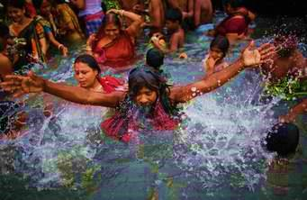

Another religion that exists in Bangladesh is Hindu. Hinduism is clearly visible in Bangladesh. Hinduism is the second largest religious affiliation in Bangladesh, covering about 10.7% of the population, according to the Bangladesh Bureau of Statistics for 2011 Bangladesh census. In terms of population, Bangladesh is the third largest Hindu state in the world after India and Nepal. According to an estimate from the Bangladesh Bureau of Statistics (BBS), there were 17million Hindus in Bangladesh as of 2015. Hindus perform many festivals.Among them the main festivals are:
1.Janmashtami
2.Durga Puja
